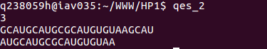

<!DOCTYPE>
<html lang=ja>
  <head>
    <meta charset="UTF-8">
    <title>問２</title>
    <link rel="stylesheet" href="./stylesheet.css">
  </head>
  <body>
    <header>
      <div class="header">
          <p>web page コンテスト</p>
	  <span><a href="./index.html" class="nav">home</a><p class="nav">-&gt問2</p></span>
      </div>
    </header>
    <div class="content">
                <div class="left_content">
            <p>項目</p>
            <ul>
                <li><a href="index.html">home</a></li>
                <li><a href="./qes_1.html">問１</a></li>
                <li><a href="./qes_2.html">問２</a></li>
                <li><a href="./aboutC.html">C言語について</a></li>
                <li><a href="HTML5_notex.html">HTML5の注意事項</a></li>
            </ul>
        </div>
    <div class="center_content">
      <h2>問2</h2>
      <h3>次のリスト構造に関するプログラムで使われる関数をC言語で作成せよ.</h3><div class="question">
        <p>このプログラムは, 各ノードが char 型の文字を持つリスト構造 (線形リスト) に関する操作を行っ ている。問 2-1 関数 chkCdn を作成せよ. 問 2-2 関数 srchE を作成せよ. 残りの 2 つの関数は作成済みとする。 関数 chkCdn は, 第 1 引数で与えられた文字列中に第 2 引数で指定された３文字からなる文字列が何回登場するかを数える。 関数 srchS は, 第 1 引数に与えられたリスト構造のノードにおいて, 連続する 3 つのノードが持つ文字の並びが, 第 2 引数で与えられた３文字からなる文字列の並びと一致する最初の位置を返り値で返す. 見付からなければ NULL を返す. 以下、ここではゼロも 3 の倍数とする. 関数 srchE は, 第 1 引数に与えられたリスト構造において, リストの先頭のノードをゼロ番目として数えると 3 の倍数の番目になるノードを起点とする連続する 3 つのノードが持つ文字の並びをリストの先頭から順に調べる. 文字列の並びが, 第 2 引数で与えられた 3 文字からなる 3 種類の文字列のいずれかに一致する場合は起点のノードの位置を返り値で返す。 見付からなければ NULL を返す. ただし, 作成する関数はメイン関数内に示された入力としての文字列 mrna の内容が変わっても, 正しく動作するように作成すること。</p></div>
      <h3>出力結果</h3>
      
      <p>コード全文</p>
      <div class="source">
	<pre>
#include <stdio.h>
#include <stdlib.h>
#include <string.h>

typedef struct struct_dummy {
  char nc;
  struct struct_dummy *next;
} Seq;

int chkCdn(char sq[], char *cdn);
Seq *srchS(Seq *sq,char *startcdn);
Seq *srchE(Seq *sq,char *stopcdn[3]);
int freeLISTnodes(Seq *sq);

int  main(int argc, char *argv[]){
  char mrna[]="GCAUGCAUGCGCAUGUGUAAGCAU";
  char startcdn[]="AUG";
  char *stopcdn[3] ={"UAA","UAG","UGA"};
  Seq *sq1;
  Seq *sq2;
  Seq *sq2stop;
  Seq *sq2end;
  Seq *pt;
  int numfound;
  int nth=0;
  numfound = chkCdn(mrna,startcdn);
  printf("%d\n",numfound);
  sq1 = (Seq *)malloc(sizeof(Seq));
  pt= sq1;
  for(nth=0;nth<strlen(mrna)-1;nth=nth+1){
    pt->nc=mrna[nth];
    pt->next= (Seq *)malloc(sizeof(Seq));
    pt=pt->next;
  }
  pt->nc=mrna[nth];
  pt->next=NULL;
  for(pt=sq1;pt!=NULL;pt=pt->next){
    printf("%c",pt->nc);
  }
  printf("\n");
  sq2=srchS(sq1,startcdn);
  if(sq2==NULL){
    printf("Start: Not found\n");
  } else{
    sq2stop=srchE(sq2,stopcdn);
    if(sq2stop==NULL){
      printf("Stop: Not found\n");
    } else {
      sq2end=sq2stop->next->next->next;
      for(pt=sq2;pt!=sq2end;pt=pt->next){
	printf("%c",pt->nc);
      }
      printf("\n");
    }
  }
  freeLISTnodes(sq1);
  return 0;
}

int chkCdn(char sq[], char *cdn){
  char *temp;
  int count=0;
  while(1){
    temp = strchr(sq,cdn[0]);
    if(temp==NULL){
      return count;
    }
    if(0==strncmp(sq, cdn, 3)){
      count++;
    }
    sq++;
  }
}

Seq *srchS(Seq *sq,char *startcdn){
  Seq *temp=sq;
  int i=0;
  Seq *ans;
  while(1){
    if(i==3){
      return ans;
    }
    if(temp==NULL){
      return NULL;
    }
    if(strchr(&(temp->nc),startcdn[i])){
      if(i==0){
	ans=temp;
      }
      i++;
      temp=temp->next;
    }else{
      ans=0;
      i=0;
      if(temp->next!=NULL){
	temp=temp->next;
      }else{
	return NULL;
      }
    }
    
  } 
}


Seq *srchE(Seq *sq,char *stopcdn[3]){
  Seq *ans=0;
  Seq *temp = sq;
  Seq *p;
  int i=0;
  while(1){

    ans = temp;
    p = temp;
    for(i=0;i<3;i++){
      if((strncmp(&(p->nc) , (stopcdn[0]+i), 1))!=0&&(strncmp(&(p->nc) , (stopcdn[1]+i), 1))!=0&&(strncmp(&(p->nc) , (stopcdn[2]+i), 1))!=0){
	i=0;
	break;
      }
	if(i==2){
	  return ans;
	}
	p=p->next;
    }
    if((temp=(((temp->next)->next)->next))==NULL){
      return NULL;
    }
    p=temp;
  }
}

int freeLISTnodes(Seq *sq){
  Seq *temp;
  while(temp!=NULL){
    temp=sq->next;
    free(sq);
    sq=temp;
  }
  return 0;
}

	      
	      </pre>

      </div>
<p>回答</p>
<table border="1" bordercolor="#000000">
  <tr><th>関数名</th><th>コード</th></tr>
  <tr><td>chkCdn</td><td><pre> int chkCdn(char sq[], char *cdn){
  char *temp;
  int count=0;
  while(1){
    temp = strchr(sq,cdn[0]);
    if(temp==NULL){
      return count;
    }
    if(0==strncmp(sq, cdn, 3)){
      count++;
    }
    sq++;
  }
}</pre></td></tr>
	  <tr><td>srchE</td><td><pre>Seq *srchE(Seq *sq,char *stopcdn[3]){
  Seq *ans=0;
  Seq *temp = sq;
  Seq *p;
  int i=0;
  while(1){

    ans = temp;
    p = temp;
    for(i=0;i<3;i++){
      if((strncmp(&(p->nc) , (stopcdn[0]+i), 1))!=0
      &&(strncmp(&(p->nc) , (stopcdn[1]+i), 1))!=0
      &&(strncmp(&(p->nc) , (stopcdn[2]+i), 1))!=0){
	i=0;
	break;
      }
	if(i==2){
	  return ans;
	}
	p=p->next;
    }
    if((temp=(((temp->next)->next)->next))==NULL){
      return NULL;
    }
    p=temp;
  }
}</pre></td></tr>
	      </table>
<p>解説</p>
<ul>
  <li>chkCdn</li>
  <p>送られてきた配列の中に見つける文字列の最初の文字があるか確認し、あったとき strncmp で３文字づつ確認し文字が一致すれば、countに１足していく。その後一つづつ先頭をずらしていき、最初の文字が見つからなくなったとき、countの中身を返している。</p>
  <li>srchE</li>
  <p>まずリストの最初のアドレスを変数に格納する。次に”調べるリスト構造の最初の文字”と”３つの３文字のうちのそれぞれ１文字目”を比較して、どれとも当てはまらなければ無限ループを抜けてリストを３つ進めて先頭アドレスを格納し直す。もしどれかと当てはまれば今度は同じように”リスト構造の２文字目”と”３つの３文字のうちの２文字目”を比較しする。これを３回抜けたらそれが返すアドレスなので、格納したアドレスを返す。
  </p>
</ul>
</div>
</div>

</body>
</html>
